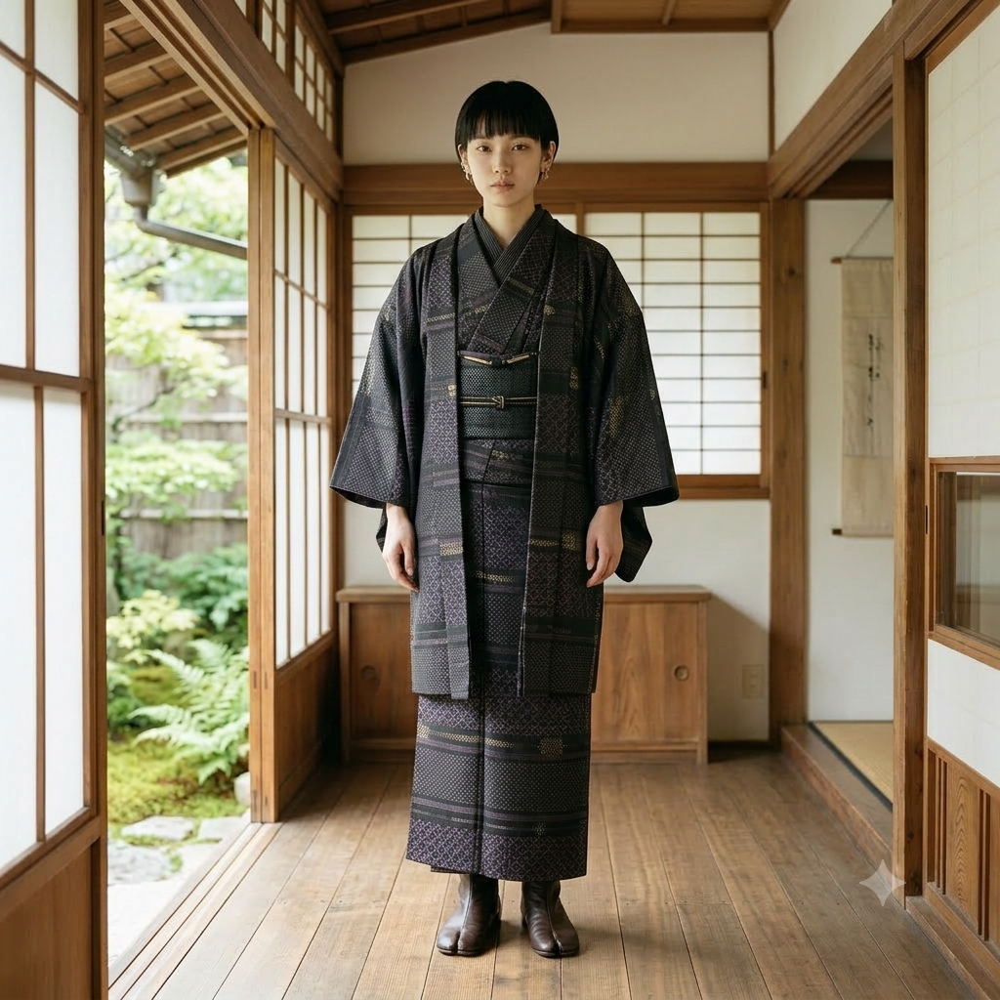
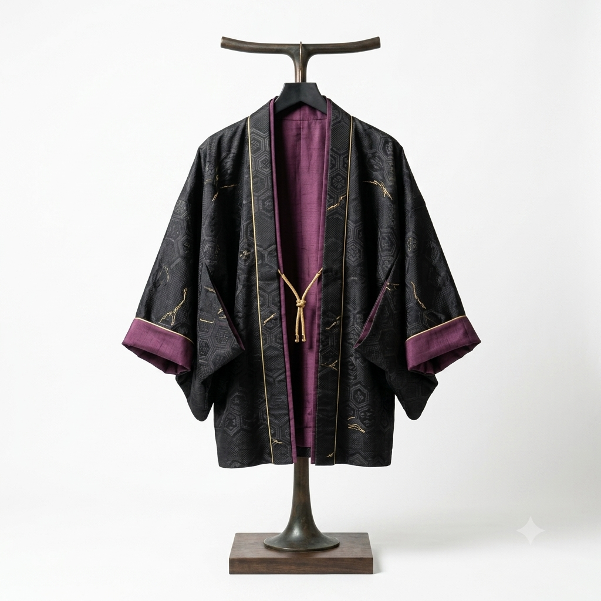
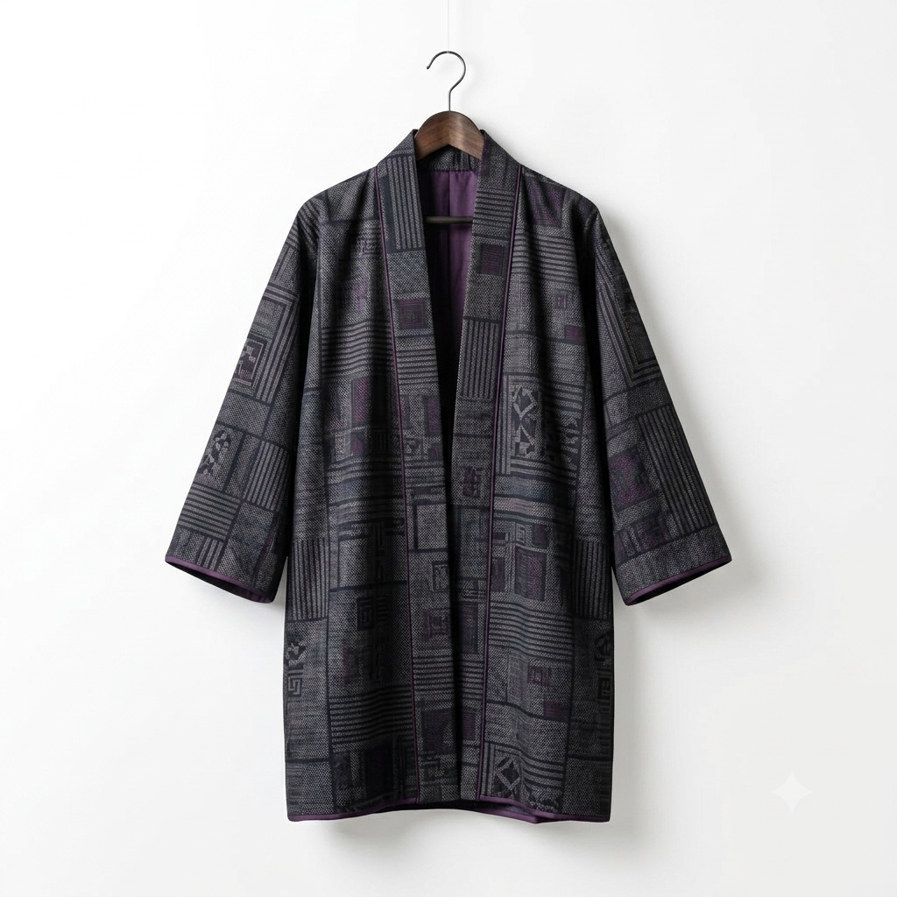
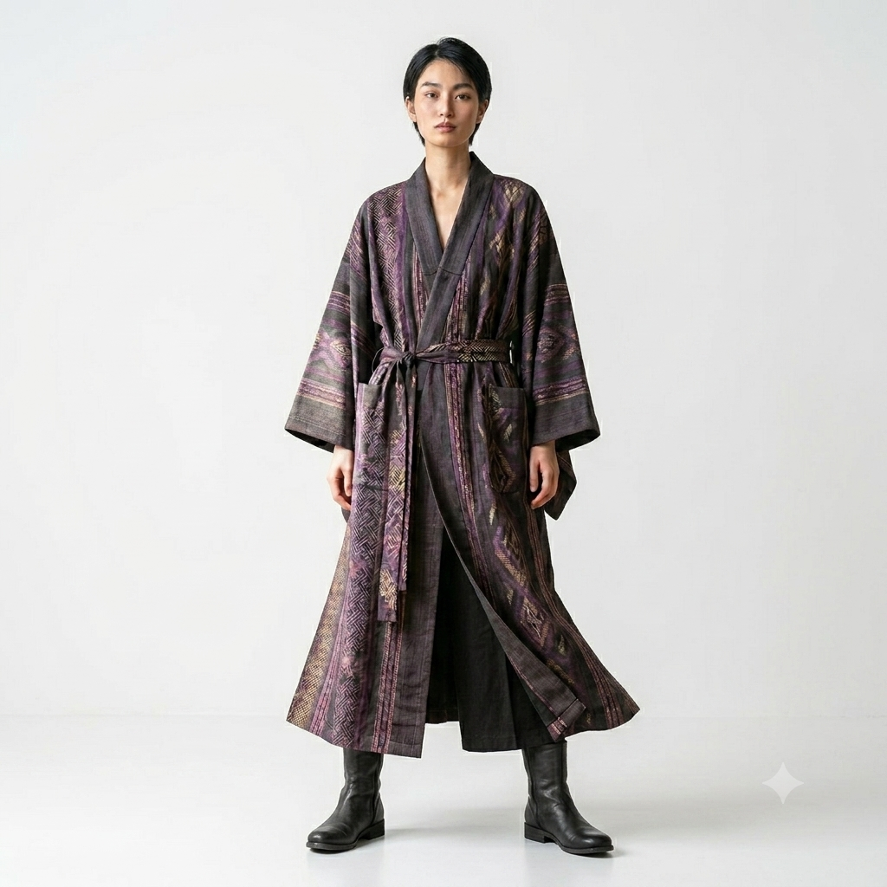

Oshima Tsumugi Modernity
静寂を紡ぎ、
強さを纏う。
奄美大島の泥染めが放つ、光を吸い込むような漆黒。職人が極限の緻密さで織りなす大島紬のテクスチャを、現代のストイックなジェンダーレスモードへ昇華させる。
View Collection
伝統の「緻密」と、
モードの「静寂な美」の対峙。
大島紬（おおしまつむぎ）は、経糸（たていと）と緯糸（よこいと）の緻密な交差によって生み出される、世界でも類を見ないほど精巧な日本の伝統織物です。泥土に含まれる鉄分とテーチ木（シャリンバイ）のタンニンが反応し、「泥染め」ならではの、どこまでも深く、吸い込まれるような独自の漆黒が生まれます。
Silenceは、この極限の職人技術がもたらす重厚感ある「静寂」を、現代的なジェンダーレスシルエットと融合。孤高でストイックな美学を落とし込みました。
「余分な装飾を削ぎ落とし、ただ緻密な織り糸の強さだけを際立たせる。それがSilenceの美学です。」
Select by Silhouette

Short Silhouette
伝統的な羽織をショート丈のモードジャケットへ再解釈。直線的なカットが強い個性を引き出します。

Middle Silhouette
腰回りから膝上を優美に覆うミドルシルエット。流れるようなドレープ感と、大島紬の張り感が美しく調和。

Long Silhouette
足元まで美しく流れる超ロング丈のガウン＆トレンチ。歩くたびに舞うような躍動感とストイックな佇まい。
Stoic Styles
経緯が紡ぐ、
妥協なき職人の指先。
-
01
泥染め (Doro-zome)
テーチ木の汁で数十回染めた後、鉄分豊富な奄美の泥田で染め上げる。この泥染めを何度も繰り返すことで、光の屈折を限りなく抑えた深い「漆黒」が誕生します。
-
02
手織り (Hand Weaving)
あらかじめ設計された細かい絣模様（かすりもよう）を表現するため、経糸と緯糸の柄が寸分の狂いもなく交差するよう、職人が手織機で1ミリ単位の微調整を重ねて織り上げます。
-
03
現代への仕立て (Tailoring)
大島紬が持つ特有 of 軽さとしなやかさ、絹100%の極上の肌触りを活かし、性別にとらわれない洗練されたシルエットへとアトリエで精密にカット・縫製します。